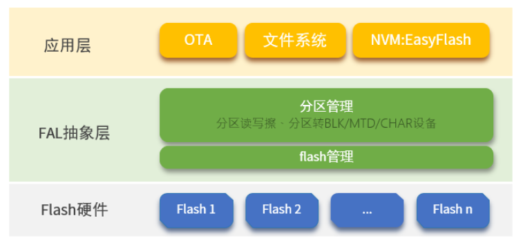

RA8P1 Titan Board Ospi Flash Usage Guide
English | Chinese
Introduction
FAL (Flash Abstraction Layer) is an abstraction layer for managing and operating Flash devices and Flash-based partitions. It provides a unified API for upper-layer Flash and partition operations (as shown in the framework diagram below), with the following features:
Supports a statically configurable partition table, which can be associated with multiple Flash devices.
The partition table supports automatic loading, avoiding the issue of the partition table being repeatedly defined in multi-firmware projects.
Lightweight code with no dependency on an operating system, allowing it to run on bare-metal platforms, such as bootloaders with limited resources.
A unified operation interface ensures the reusability of underlying Flash drivers for components that rely on Flash, such as file systems, OTA, and NVM (e.g., EasyFlash).
Built-in Finsh/MSH-based test commands, enabling developers to read, write, and erase Flash or partitions via shell commands with byte-level addressing, which facilitates debugging and testing.

In this example, the Titan Board onboard GD Flash is combined with the RT-Thread FAL component to build a file system using littlefs.
Hardware Overview

Software Overview
The source code for file system initialization in this example is located at: ./board/ports/filesystem/drv_filesystem.c 中：
/*
* Copyright (c) 2006-2021, RT-Thread Development Team
*
* SPDX-License-Identifier: Apache-2.0
*
* Change Logs:
* Date Author Notes
* 2018-12-13 balanceTWK add sdcard port file
* 2021-05-10 Meco Man fix a bug that cannot use fatfs in the main thread at starting up
* 2021-07-28 Meco Man implement romfs as the root filesystem
*/
#include <rtthread.h>
#include <dfs_romfs.h>
#include <dfs_fs.h>
#include <dfs_file.h>
#if DFS_FILESYSTEMS_MAX < 4
#error "Please define DFS_FILESYSTEMS_MAX more than 4"
#endif
#if DFS_FILESYSTEM_TYPES_MAX < 4
#error "Please define DFS_FILESYSTEM_TYPES_MAX more than 4"
#endif
#define DBG_TAG "app.filesystem"
#define DBG_LVL DBG_INFO
#include <rtdbg.h>
#ifdef BSP_USING_FS_AUTO_MOUNT
#ifdef BSP_USING_SDCARD_FATFS
static int onboard_sdcard_mount(void)
{
if (dfs_mount("sd", "/sdcard", "elm", 0, 0) == RT_EOK)
{
LOG_I("SD card mount to '/sdcard'");
}
else
{
LOG_E("SD card mount to '/sdcard' failed!");
}
return RT_EOK;
}
#endif /* BSP_USING_SDCARD_FATFS */
#endif /* BSP_USING_FS_AUTO_MOUNT */
#ifdef BSP_USING_FLASH_FS_AUTO_MOUNT
#ifdef BSP_USING_FLASH_FATFS
#define FS_PARTITION_NAME "filesystem"
static int onboard_fal_mount(void)
{
/* Initialize the fal function */
extern int fal_init(void);
extern struct rt_device* fal_mtd_nor_device_create(const char *parition_name);
fal_init ();
/* Create a block device on the partition named "filesystem" in spi flash */
struct rt_device *mtd_dev = fal_mtd_nor_device_create (FS_PARTITION_NAME);
if (mtd_dev == NULL)
{
LOG_E("Can't create a mtd device on '%s' partition.", FS_PARTITION_NAME);
return -RT_ERROR;
}
else
{
LOG_D("Create a mtd device on the %s partition of flash successful.", FS_PARTITION_NAME);
}
/* Mount the filesystem on the spi flash partition named "filesystem" */
if (dfs_mount (FS_PARTITION_NAME, "/", "lfs", 0, 0) == 0)
{
LOG_I("Filesystem initialized!");
}
else
{
dfs_mkfs ("lfs", FS_PARTITION_NAME);
if (dfs_mount ("filesystem", "/", "lfs", 0, 0) == 0)
{
LOG_I("Filesystem initialized!");
}
else
{
LOG_E("Failed to initialize filesystem!");
}
}
return RT_EOK;
}
#endif /*BSP_USING_FLASH_FATFS*/
#endif /*BSP_USING_FLASH_FS_AUTO_MOUNT*/
const struct romfs_dirent _romfs_root[] =
{
#ifdef BSP_USING_SDCARD_FATFS
{ROMFS_DIRENT_DIR, "sdcard", RT_NULL, 0},
#endif
#ifdef BSP_USING_FLASH_FATFS
{ ROMFS_DIRENT_DIR, "fal", RT_NULL, 0 },
#endif
};
const struct romfs_dirent romfs_root =
{
ROMFS_DIRENT_DIR, "/", (rt_uint8_t*) _romfs_root, sizeof(_romfs_root) / sizeof(_romfs_root[0])
};
static int filesystem_mount(void)
{
#ifdef BSP_USING_FS
if (dfs_mount(RT_NULL, "/", "rom", 0, &(romfs_root)) != 0)
{
LOG_E("rom mount to '/' failed!");
}
/* Ensure that the block device is successfully registered before mounting the filesystem */
rt_thread_delay(500);
#endif
#ifdef BSP_USING_FS_AUTO_MOUNT
onboard_sdcard_mount();
#endif /* BSP_USING_FS_AUTO_MOUNT */
#ifdef BSP_USING_FLASH_FS_AUTO_MOUNT
onboard_fal_mount ();
#endif
return RT_EOK;
}
INIT_COMPONENT_EXPORT(filesystem_mount);
Build & Download
RT-Thread Studio: Download the Titan Board resource pack from the RT-Thread Studio package manager, then create a new project and compile it.
Once compiled, connect the development board’s JLink interface to the PC, and download the firmware to the development board.
Running Result
Press the reset button to restart the development board and observe the terminal logs from the board.